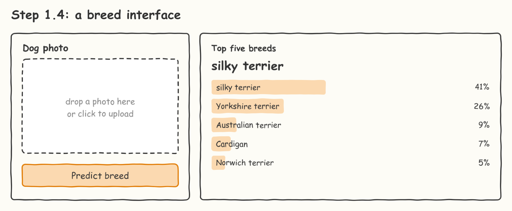
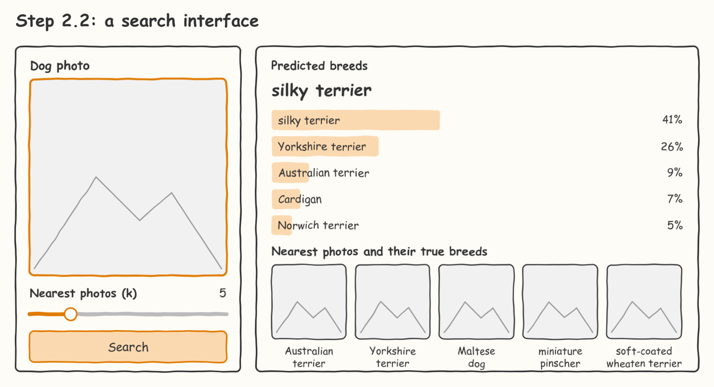
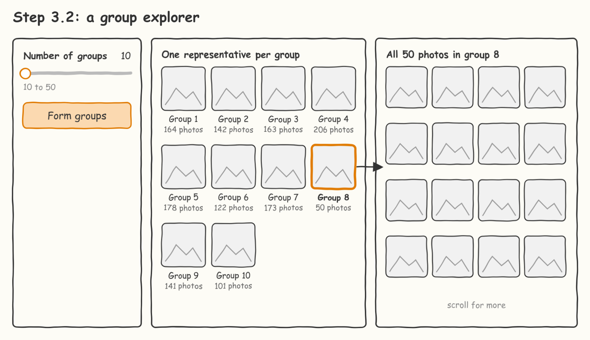
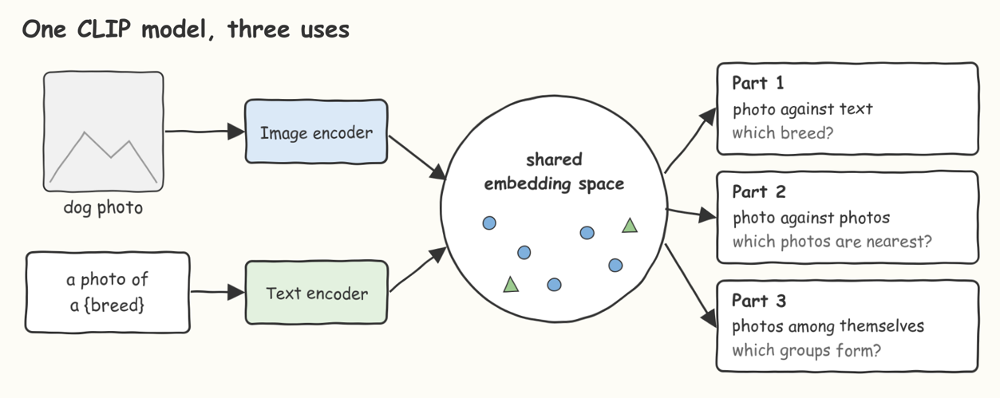

使用 CLIP 進行零樣本學習
用一個「已經看過四億張圖」的模型，在不訓練任何東西的前提下，把狗的照片分到 120 個犬種。 這份作業真正在測的不是你的模型，而是你寫的那 120 句英文。
只看這一頁就夠了
做完這 8 步，就是 100 分。其他章節只是解釋「為什麼」。
- 建環境開一個 venv，裝 torch / clip / gradio / scikit-learn。之後所有 cell 都用這個 kernel。 可執行的 python
- 解壓 Stanford Dogs782 MB ZIP → 資料夾裡是 120 個犬種資料夾。放在本機磁碟，不要放雲端同步碟。 data/n02xxxxxx-犬種/*.jpg
- 寫 3 個函式
encode_text()、encode_image()、predict_breed()。全部 L2 正規化。 1.3 完成 - 編碼全部照片，存檔20,580 張，每張只做一次。存成
all_vecs.npz，之後永遠載入。 20580 × 512 向量 - 算三個數字一次
img @ txt.T→ top-1、top-5、macro F1。要跑滿 20,580 張。 1.5 的 25 分 - 換一句話，再算一次第二個模板 → 同一張表格比較 → 用你自己的話解釋為什麼會不同。 1.6 的 10 分
- 做 3 個 Gradio 介面 + 截圖犬種分類、圖像檢索、群組探索器。截圖貼在程式碼旁邊。 37 分
- 補 AI 揭露，交出去三段式：用什麼工具 / 解決什麼問題 / 你測試後有沒有效。Moodle 要按到「Submitted for grading」。 避免扣 25 分
按右上角「精簡模式」可切換要不要看長篇說明。
00總覽：三個部分其實是一條資料流
三個部分共用同一組影像向量。這代表：照片只編碼一次， 之後所有比較都是純矩陣運算。理解這點，整個作業的難度會下降一個量級。
.npz 放 Drive兩個 L2 正規化過的向量，內積 = 餘弦相似度。所以「比較」永遠只是
image_vecs @ text_vecs.T 這一行。
01為什麼「不訓練」也能分類
Project 1 裡，每個天氣類別都要幾百張標註照片 + 一次訓練；新增類別就要重來一次。 CLIP 走的是另一條路：它同時讀「照片」和「照片的說明文字」，把兩者壓進同一個空間。 結果是——一張照片和一句描述它的話，會落在彼此附近。
於是「分類」變成：為每個犬種寫一句話，看看哪一句與照片的夾角最小。 你從來沒有給模型看過這 120 個犬種的標註範例，所以叫 zero-shot。
CLIP 的權重完全不變。你能控制的只有那 120 句文字。 所以 Part 1 有一半分數，本質上是在評你的文字設計與實驗對照。
為什麼犬種名稱不能直接丟進去
CLIP 是從「人類寫給自己看的圖片說明」學的，它看到的句子長這樣：
"a small brown dog sitting on a couch"。
而 silky_terrier 對它來說長得像程式碼，不像語言。
把它包成一句話 a photo of a silky terrier.，就比較接近訓練時的文字分佈。
犬種名稱常有歧義。Chihuahua 也是墨西哥的一個州；
Newfoundland、Pekinese 同樣有多重意思。這是 Step 1.6 要你想的東西。
02開始之前：本機環境（不是 Colab）
你用本機 Jupyter，所以「Drive / /content / T4」那些都換成本機路徑。
你的機器是 GTX 1650 (4 GB)，跑 CLIP ViT-B/32 推論完全夠用。
| Colab 寫法 | 你在本機要改成 |
|---|---|
/content/drive/MyDrive/... | D:\cis341\assignment2\data\...（或你放的位置） |
| 上傳 ZIP 到 Drive | 直接解壓到本機磁碟 |
!unzip | Expand-Archive（PowerShell）或右鍵解壓 |
| GPU runtime 選單 | 不用選，本機自動用 cuda |
| 存向量到 Drive | 存到同一個資料夾，加 if not exists: load |
建議的 4 行安裝（在 assignment2 資料夾下）
py -3.12 -m venv .venv
.\.venv\Scripts\Activate.ps1
python -m pip install --upgrade pip
python -m pip install torch torchvision --index-url https://download.pytorch.org/whl/cu121
python -m pip install git+https://github.com/openai/CLIP.git gradio scikit-learn numpy pillow裝完後在 VS Code 右上角選 kernel → 選 .venv 的 python。
如果 GPU 記憶體不足（4 GB 編碼時要小心 batch size），把 batch 設成 32 就好。
20,580 張在 1650 上大約 3–8 分鐘，比 Colab 慢但可以接受 —— 反正只做一次。
① 不要把資料集放在 OneDrive／Google Drive 同步資料夾，逐檔讀取會被同步程式拖慢十倍。
② train_list.txt / test_list.txt 完全不需要 —— 零樣本分類沒有訓練，Part 1 直接分類全部照片。
參考成績
ViT-B/32 + 一個合理 prompt 大約 top-1 55–60%、top-5 85–90%。
分數不取決於是否超過它，但遠低於此通常代表有 bug。
03Part 1 · 零樣本分類（60 分）
資料夾名稱長這樣：n02085620-Chihuahua、n02097658-silky_terrier。
你要決定送進 CLIP 的文字是什麼 —— 去掉 ImageNet 編號、底線換成空白，就是
silky terrier。
真實標籤來自資料夾的排序。你清單的第 i 個犬種，必須對應答案裡標籤
i。順序錯了，所有準確率都是錯的，而且不會有任何報錯。
→ 用 assert 或並排列印，證明兩者一致。
選一個模板，套用到全部 120 個犬種。每個犬種恰好一句，沒有任何犬種被描述得比較有利。
| 犬種 | Prompt |
|---|---|
| Chihuahua | a photo of a Chihuahua. |
| silky terrier | a photo of a silky terrier. |
| Bernese mountain dog | a photo of a Bernese mountain dog. |
要印出幾個範例，並說明你為什麼選這個模板（這句話值 2 分）。
什麼樣的模板算好？
符合兩件事：① 適合全部 120 個犬種；② 接近「人寫的圖片說明」的文體。
反例：A close-up of a {breed} 不適合這些大多是生活照的圖；
a photo of a large {breed} 不適合 Chihuahua。混用模板會讓比較失去意義。
實作 predict_breed(image_path, k=5)，回傳依序的 (breed, score) 清單。
助教評分時會用自己的照片呼叫它。
- 編碼 120 個 prompts → L2 正規化。（只做一次，放函式外）
- 開圖 →
convert("RGB")→ CLIP preprocess → 編碼 → 正規化 - 相似度 = 一次矩陣乘法
- 排序取 top-k；說明分數是餘弦相似度還是 softmax 機率
必須處理非 RGB 檔案（灰階 / RGBA / CMYK）。一行 convert("RGB") 就是這 2 分。
展示三張照片，每張標出真實犬種、預測結果，以及 top-1 / top-5 是否算正確。
把 predict_breed 包成介面：上傳照片 → gr.Label 顯示 top-5 與分數。

測試素材：3 張資料集以外的狗 + 1 張不是狗的照片， 並解釋 CLIP 對後者做了什麼、為什麼。
介面用的是「1.6 最後選定的 prompt」。如果你先截圖、後改模板，截圖就與最終設定不符。 正確順序是：1.6 選定 → 回頭截圖。
截圖小技巧
launch() 會印出公開連結。在新分頁打開，介面佔滿視窗，截圖清楚得多 ——
Colab 內嵌的框太窄。
用你存好的向量，一次矩陣乘法分類全部 20,580 張（不要迴圈呼叫 20,580 次）。 報告三個數字：
| 指標 | 意思 | 要注意 |
|---|---|---|
| Top-1 準確率 | 真實犬種排第一的比例 | 每張照片等重 → 照片多的犬種影響力較大（每犬種 148–252 張） |
| Top-5 準確率 | 真實犬種在前五名的比例 | |
| Macro F1 | 120 個犬種各算 F1，再取平均 | 每個犬種等重，能抓出「CLIP 只愛那幾個犬種」 |
recall = 此犬種被正確預測 ÷ 此犬種全部照片
F1 = 2 × precision × recall / (precision + recall) （分母為 0 時 F1 = 0）
可直接用 f1_score(y_true, y_pred, average="macro", zero_division=0)。
用子集測完就交出數字 → 此步驟 0 分。提交的數字必須來自全部 20,580 張。 另外「工作流程完整性與端到端可執行」另佔 7.5 分，所以程式碼要能一鍵重跑。
換一個不一樣的模板，重跑 1.5 全量評估。兩組結果放進同一張表，然後選定介面要用哪一組。
要用你自己的話說明：CLIP 和照片都沒變，為什麼換句話說結果就變了？ 提示兩個方向：① CLIP 訓練時看到的文字分佈；② 犬種名稱的其他意思。
04Part 2 · 圖像檢索（20 分）
範圍是 subset_list.txt 的 1,440 張（每犬種 12 張）。
你在 Part 1 已經編碼過，這裡只要挑出來。
find_similar(image_path, k=5) → 回傳 (path, breed, score) 的清單。
編碼方式必須與 1.3 完全相同（同一個 preprocess、同樣正規化），否則分數不可比。
展示一張查詢，顯示最近的照片本體 + 犬種 + 分數，不要只印路徑。
輸入：照片上傳 + k 滑桿。同時顯示兩條路線的結果：
gr.Label←predict_breed的 top-5（文字路線）gr.Gallery←find_similar的 k 張最近照片，caption 為真實犬種（圖像路線）

caption 與預測一致 → 文字與圖像兩條路殊途同歸。
不一致 → 別急著說「錯」，先看最近的照片共享了什麼：姿勢、毛色、背景、拍攝角度。
3 張不同的狗照片 × 2 個 k 值（例如 5 與 10）= 6 張截圖。
每張下面寫 1–2 句：最近的照片是否與預測犬種一致。
05Part 3 · 分群（20 分）
k-means 在已正規化的向量上跑，等價於用餘弦相似度分群 —— 與 Part 1、2 同一個距離概念。
KMeans(n_clusters=10, random_state=341, n_init=10).fit_predict(vectors)固定 random_state → 每次執行都得到同一組群。
代表照片的選法：該群裡離自己群中心最近的那張。
群中心最近的照片不一定屬於該群，所以要在該群成員內部比較
（用 KMeans.transform 拿到距離矩陣，只取自己群的欄位）。
群中心是「這個群的平均」→ 最靠近它的照片最能代表群的主題。 隨機挑一張可能挑到群裡的異類。
把這些步驟包成接受群組數量的函式（3.2 要呼叫它），並展示 10 群的 群組大小 + 代表照片。
| 欄 | 內容 | 技術點 |
|---|---|---|
| 左 | 群組數量滑桿（建議 10–50）+ 形成按鈕 | — |
| 中 | gr.Gallery 每群一張代表，caption = 群號 + 張數 | allow_preview=False → 點擊是選取而非放大 |
| 右 | gr.Gallery 該群全部照片 | select → gr.SelectData.index |
目前的群組要跨點擊保留 → gr.State。版面用 gr.Row / gr.Column。

要把 State（目前的群組）與 SelectData（被點的是第幾張）接起來。
檢索實驗課兩者都用過，可以照抄骨架。重新分群在 1,440 張上只需幾秒。
用兩種設定（例如 10 群 與 40 群），各貼一張「右欄已打開某一群」的截圖。然後描述：
- 哪些群很大？
- 哪些群裡的照片看起來非常相似？
- 是什麼把每一群凝聚在一起 —— 毛色、顏色、姿勢、場景、還是照片裡的人？
請描述你看到的外觀，不要點名犬種。寫「一群淺色、短毛、坐姿的小型犬」比寫 「Chihuahua 群」更符合要求 —— 因為這部分的前提就是不看標籤。
06繳交、AI 揭露與時限
| 項目 | 要求 |
|---|---|
| 繳交物 | 一個已執行的 .ipynb（含輸出），三個部分依序 |
| 說明位置 | 寫在它所討論的結果旁邊 |
| 截圖位置 | 貼在建立該介面的程式碼旁 |
| 不需要交 | 報告、影片、資料集、你存的向量 |
| 外部照片 | 要說明來源；第三方程式碼在使用的 cell 後立即引用 |
AI 揭露：三個部分都要寫
允許使用 AI，但要說明：① 用哪個工具 ② 請它解決什麼具體問題 ③ 你測試後是否有效。 某部分沒用就明說。
「使用 ChatGPT，協助撰寫程式」這種寫法不算揭露。 也不要聲稱你做過其實沒做的檢查。
2026-11-29（日）23:59 香港時間。逾期每天扣 20%，最多五天。
Moodle 上必須按下「Submit assignment」並確認狀態是 Submitted for grading —— 停在草稿不算繳交。
學術誠信
必須個人獨立完成。抄襲與分享程式碼 → 零分，並進入紀律程序。
07評分表（可勾選，自動計分）
勾選你已經完成的項目，總分會即時更新。勾選狀態存在瀏覽器本機，關掉再開仍在。
附錄 A.2 · 缺失內容與無佐證的主張
- 沒有已執行輸出的程式碼 → 只得該步驟的實作分數。
- 部分執行結果的數字 → 不算完整資料集的分數，即使程式碼能處理全部。
- 與你的輸出相矛盾的主張 → 該結果不給分。仔細測試但令人失望的結果仍得分。
- 評分只看 notebook 實際顯示的內容，不會對已反映在步驟中的缺失額外平扣。
08建議的實作順序
注意順序不完全是編號順序：1.5（評估）排在 1.4（介面）之前， 因為介面要用 1.6 選定的 prompt。
| 階段 | 內容 | 產出（給下一步用） |
|---|---|---|
| A | Setup → 解壓 → 載入 CLIP | 編碼函式 |
| B | 編碼全部照片 → 存 all_vecs.npz | 20,580 × 512 向量 |
| C | 篩出子集 → 存 subset_vecs.npz | 1,440 張向量 + 真實犬種 |
| D | 1.1 清單 + 對齊檢查 | breeds[120] |
| E | 1.2 模板 A → 文字向量 A | text_vecs_A |
| F | 1.3 predict_breed + 三張測試 | 可重用函式 |
| G | 1.5 全量評估（A 組） | 三個指標 |
| H | 1.6 模板 B → 評估（B 組）→ 選定 | 最終 prompt |
| I | 1.4 介面 + 截圖（此時 prompt 已定案） | 4 張截圖 |
| J | 2.1 → 2.2 → 2.3 | 6 張截圖 |
| K | 3.1 → 3.2 → 3.3 | 2 張截圖 + 描述 |
all_vecs.npz（vectors, paths）、
subset_vecs.npz（vectors, paths, breeds）。
全部存 float32，先正規化再存，之後就不用再處理。
09附錄
資料集
Stanford Dogs 由 Aditya Khosla、Nityananda Jayadevaprakash、Bangpeng Yao 與 Li Fei-Fei 以 ImageNet 影像與標註建立，論文為 Novel Dataset for Fine-Grained Image Categorization， 第一屆 Fine-Grained Visual Categorization 工作坊（CVPR 2011）。

三份文件的關係
| 檔案 | 用途 |
|---|---|
CIS341-Assignment2-2627.md | 原文（英文） |
CIS341-Assignment2-2627.zh-Hant.md | 繁中對照 |
CIS341-Assignment2-workflow.md | mermaid 流程圖 + cell 順序表 |